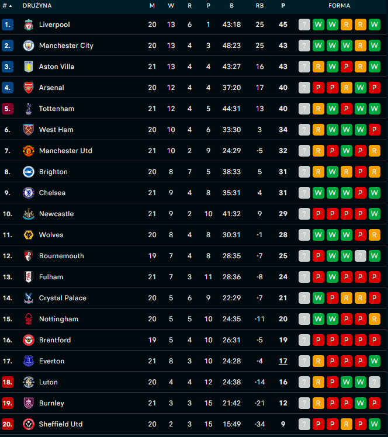

Najwięcej tytułów mistrza: Manchester United jest klubem z największą liczbą zdobytych tytułów mistrza w historii Premier League. Klub ten wygrał ligę 13 razy.
Najwięcej zwycięstw w jednym sezonie: W sezonie 2017/2018 Manchester City, prowadzony przez Pepa Guardiolę, zdobył rekordowe 100 punktów, co było najwyższym wynikiem w historii ligi.
Najwięcej strzelonych bramek w jednym sezonie: Sezon 2017/2018 był również rekordowy pod względem zdobytych bramek. Kluby zdobyły łącznie 1,072 goli, co jest największą liczbą w historii Premier League.
Największe zwycięstwo: Największe zwycięstwo w historii Premier League miało miejsce 25 października 2009 roku, kiedy Manchester United pokonał Portsmouth 9:0.
Najdroższy transfer: W 2020 roku Manchester United zakupił Bruno Fernandesa za około 68 milionów funtów, co było najdroższym transferem w sezonie 2019/2020.
Najstarszy zawodnik: Brad Friedel jest najstarszym zawodnikiem, który kiedykolwiek wystąpił w meczu Premier League. Amerykański bramkarz miał 43 lata, kiedy bronił barw Tottenham Hotspur w meczu przeciwko Aston Villi w maju 2012 roku.
Najmłodszy strzelec: James Vaughan jest najmłodszym strzelcem bramki w historii Premier League. W 2005 roku, jako zawodnik Evertonu, zdobył bramkę mając zaledwie 16 lat i 271 dni.
Najdłuższy czas bez porażki: Arsenal ma na swoim koncie rekordową serię meczów bez porażki w historii Premier League. W sezonie 2003/2004, znanej jako "Invincibles", nie przegrali żadnego z 38 meczów ligowych.
Najwyższa frekwencja: Największa frekwencja na jednym meczu Premier League miała miejsce 30 kwietnia 2008 roku, kiedy na Old Trafford zgromadziło się 76,098 widzów na meczu pomiędzy Manchesterem United a Arsenal FC.
Pierwsza bramka: Pierwsza bramka w historii Premier League została strzelona przez Briana Deane'a z Sheffield United w meczu przeciwko Manchesterowi United 15 sierpnia 1992 roku.
Premier League to najwyższa klasa rozgrywkowa angielskiego systemu ligowego piłki nożnej. Liga została założona w 1992 roku, zastępując poprzednią strukturę, znanej jako Football League First Division. Przejęcie zarządzania rozgrywkami przez angielską federację piłkarską (FA) miało na celu zwiększenie atrakcyjności rozgrywek i ich komercyjnej wartości.
Pierwszy sezon Premier League rozpoczął się w sierpniu 1992 roku, a Manchester United, pod wodzą menedżera Alexa Fergusona, zdobył tytuł mistrza. Od tego czasu Premier League stała się jedną z najbardziej popularnych i najbardziej śledzonych lig piłkarskich na świecie.
Liga skupia się na otwartej rywalizacji, a poziom rozgrywek jest bardzo wyrównany, co sprawia, że każdy sezon jest pełen emocji i niespodzianek. Z czasem, Premier League stała się domem dla wielu największych gwiazd piłki nożnej na świecie, przyciągając uwagę globalnej publiczności.
Kluby takie jak Manchester United, Arsenal, Chelsea, Liverpool czy Manchester City zdobyły liczne tytuły mistrzowskie i budowały swoje sukcesy zarówno na krajowym, jak i międzynarodowym poziomie. Premier League to również liga, która przyciąga znaczne środki finansowe, co przekłada się na rozwój infrastruktury klubów i zwiększenie prestiżu angielskiego futbolu.
Od momentu swojego powstania, Premier League stała się jednym z głównych punktów zainteresowania światowej społeczności piłkarskiej, przyciągając setki milionów kibiców i umacniając swoją pozycję jako jedna z najważniejszych lig piłkarskich na świecie.
W 1992 roku angielska piłka nożna przeszła istotną transformację, gdy 22 kluby zdecydowały się opuścić istniejący system ligowy, znany jako Football League First Division, i utworzyć nową, niezależną ligę - Premier League. Celem było zwiększenie atrakcyjności rozgrywek, zarówno pod względem sportowym, jak i komercyjnym.
Pierwszy sezon rozpoczął się 15 sierpnia 1992 roku, a pierwszym mistrzem został Manchester United pod wodzą Alexa Fergusona. Klub ten pokonał swojego najbliższego rywala, Aston Villę, o dziesięć punktów.
W latach 90. i wczesnych latach 2000., Manchester United pod przywództwem Alexa Fergusona stał się dominującą siłą w Premier League. Klub zdobył szereg tytułów mistrza, w tym serię trzech z rzędu w sezonach 1998/1999, 1999/2000 i 2000/2001. Sezon 1998/1999 był szczególnie niezwykły, gdy Manchester United zdobył potrójną koronę, zwyciężając w Premier League, Lidze Mistrzów UEFA i Pucharze Anglii.
W sezonie 2003/2004 Arsenal, pod wodzą menedżera Arsène'a Wengera, osiągnął niezwykły sukces, pozostając niepokonanym przez całą ligową kampanię. Ta drużyna, znana jako "Invincibles", stała się legendą, zdobywając tytuł mistrza bez żadnej porażki w 38 meczach ligowych.
Historia Premier League pełna jest również ekscentrycznych i emocjonujących momentów. W 1994 roku, Eric Cantona z Manchesteru United stał się jednym z najbardziej kontrowersyjnych piłkarzy w historii ligi, kopiąc kibica Crystal Palace podczas meczu. W 2016 roku Leicester City, z oddsami 5000:1 na zdobycie tytułu, zaskoczyło świat, zwyciężając Premier League pod wodzą menedżera Claudio Ranieriego.
Premier League stała się jednym z najbardziej popularnych produktów eksportowych brytyjskiej kultury sportowej. Liga przyciąga miliony kibiców z całego świata, a prawa telewizyjne są sprzedawane na ogromne kwoty. Wielu światowej klasy piłkarzy przeniosło się do angielskich klubów, co dodało do ligi prestiżu i konkurencyjności.
W miarę upływu czasu, Premier League stała się jednym z najbogatszych rozgrywek piłkarskich na świecie. Kluby czerpią korzyści z lukratywnych umów telewizyjnych, sponsorów i sprzedaży biletów. Wzrost finansowy przyczynił się do tego, że liga stała się atrakcyjnym miejscem dla światowej klasy talentów.
Obecnie Premier League utrzymuje się jako jedna z najbardziej ekscytujących i najbardziej konkurencyjnych lig piłkarskich na świecie. Rywalizacja między czołowymi klubami, takimi jak Manchester City, Liverpool, Chelsea czy Manchester United, przyciąga uwagę kibiców na całym świecie. Liga jest również zaangażowana w różne inicjatywy społeczne i charytatywne, mające na celu promowanie piłki nożnej i wspieranie społeczności lokalnych. W ciągu swojej relatywnie krótkiej historii, Premier League stała się jednym z najsilniejszych symboli brytyjskiego sportu i jednym z najbardziej fascynujących widowisk piłkarskich na świecie.